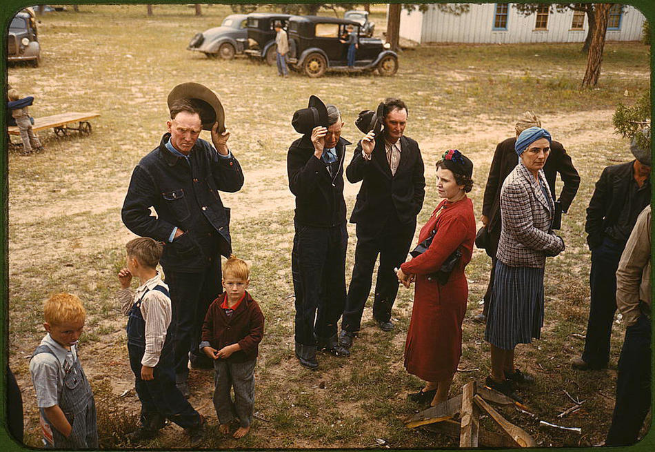

Two men in Akron built a religion by accident
In 1935, in Akron, Ohio, two men who could not stop drinking built something with the shape of a religion. They were not trying to.
It had confession, amends, surrender, a core text, and a congregation. The one part it refused to fix was which god you answered to.

Dr. Bob's House, Akron. Photo by Nyttend, released to the public domain, via Wikimedia Commons.
{kind=link}
Be honest at once. They were not working from a blank slate.
Both came out of the Oxford Group, an explicitly Christian movement with its own meetings and creed. The two groups parted in the late 1930s. AA history So this is distillation, not invention. They took an inherited faith and boiled it down, and cut what they could not use.
What makes it rare is that we can watch it happen. The documents are open, the dates are known, and it sits inside living memory.
It boiled under a hard test. It had to work for skeptics whose lives were on the line, people who would drink again and some of them die if it failed.
So it kept only what worked. Hold onto that test. It is the engine of everything below.
Here is the question it lets us ask. If you left 500 children on an island with no books and came back in 200 years, would they have a religion?
Uninhabited Henderson Island, South Pacific, from the International Space Station. NASA, public domain.
{kind=link}
· · ·
Write down three guesses before the reveal
Clear three assumptions first. Many people now check the no-religion box, yet most of them still believe in something, a higher power or a spiritual force, though how many varies sharply by country. Pew A single holy book is mostly an Abrahamic feature. Plenty of traditions run on practice rather than text, and some carry no text at all.
Now the game. If religion is a human universal, we should be able to predict what the island children build before we open a single book.
Do this partWrite down three things you are sure they would have. An actual list, three items. The rest of this only works if you commit to it.
Here is the strict reading of the evidence. It supports convergence on an architecture, not on a creed.
The parts that recur almost everywhere are few, and humbler than the list you probably wrote. Spirits in things. Communal ritual. Usually someone who tends it, and usually some careful handling of the dead. At the scale of five hundred people this is not a temple and a priesthood. It is a healer who falls into a trance, spirits in the weather and the trees, and a dance on a moonless night. The pyramids and the calendars come later, with the crowds. foragers
Now look at your list. Most readers write the specifics: a particular god, an afterlife, prayer. Those are exactly the parts real traditions fight over, along with a savior, the idea of sin, and sacred law. They do not make the cut.
Notice the pattern. Everything specific enough to argue about is exactly the part that varies. The universal parts are the ones you took for granted because they felt too obvious to write.
The universal parts of religion are the parts nobody preaches about.
One sharper concession, because it costs me something. Even the inner intuition you might think is universal, the self as the central problem and surrender as the cure, is not. It is a narrower and later theme, and we will meet the tradition that broke it.
The skeleton is universal. The theology is local. That is a strong claim, so it should be visible somewhere outside a thought experiment.
· · ·
The experiment already ran, at planetary scale
It ran across half the planet. People reached the Americas and then developed in isolation for more than ten thousand years. peopling
When the two halves of humanity met in 1492, both sides had temples, priesthoods, ritual offering, rites for ancestors, and beliefs about what comes after death. The same broad architecture, built twice, with no contact to copy from.


Left: Pyramid of the Sun, Teotihuacan by Mario Roberto Durán Ortiz, CC BY-SA 4.0. Right: the Parthenon, Athens, public domain. Both via Wikimedia Commons.
{kind=link}
{kind=link}
On one side of the water, stepped pyramids and a priestly calendar in Mesoamerica, and in the Andes preserved ancestors who were fed, dressed, and carried out to be consulted like the living. Andean mummies On the other side, the same jobs done under different names, for different gods.
Keep the caveats in view. Norse sailors reached Newfoundland around 1000 AD, the case for later Polynesian contact is real but debated, and the Americas were never one uniform faith. contact They held thousands.
That diversity is the point, not an embarrassment. The content sprawled in every direction while the scaffolding kept reappearing.
Here is the deeper honesty, in one line. Neither side started from zero.
Both inherited the same human equipment, the same hands and the same wiring for reading other minds and seeing intent behind events. So this is not proof from a blank slate. It is two branches elaborating one shared inheritance, which is convergence on structure.
That is structure. What about the inner content, the diagnosis of what is actually wrong with us?
· · ·
The tradition that would not surrender
One ancient tradition broke the inner pattern cleanly. Its oldest hymns, the Gathas of Zoroastrianism, do not ask you to surrender. Gathas Their world is a war between truth and the Lie, between order and the chaos that corrodes it.
Faravahar relief, Persepolis by Napishtim, CC BY-SA 3.0, via Wikimedia Commons.
{kind=link}
They call for active struggle against that Lie. The central failing they name is deceit, not the proud or grasping self that so many later traditions make the enemy, but falsehood itself. Choose truth, fight the Lie, take a side. That is a different diagnosis of the human problem, not a different accent on the same one.
Let that stand as the strongest evidence that the inner creed never converged. The diagnoses genuinely differ from one tradition to the next. That is why the skeleton is the real universal and the creed is not.
Now the twist, handled with care. This tradition is small today, perhaps a hundred and ten thousand people. demographics
Yet it plausibly seeded ideas that later spread across the Near East: a heaven and a hell, a final judgment, a cosmic adversary, and a world-saving figure to come. Those features turn up later in Judaism, then Christianity, then Islam. The influence is genuinely contested, and the dating of the Gathas is unsettled. eschatology
Follow the consequence. If those ideas traveled down a single lineage, then the agreement among the Abrahamic faiths about them is not three independent witnesses. It is one witness, quoted three times.
Which means the real question is not what religions share. It is how to count them.
· · ·
Nobody calls a squid eye a human eye
The frame that fits is not that all faiths are one. It is convergent evolution.
Take eyes. Simple light-sensors evolved on their own dozens of times over. The camera eye, the kind you are reading with, was built separately at least twice, once in our lineage and once in the squid's. eye evolution A squid eye and a human eye do the same job by different routes, and no biologist calls them the same eye.

Vertebrate (left) and octopus (right) eye by Caerbannog, CC BY-SA 3.0, via Wikimedia Commons.
{kind=link}
Religion is a niche humans keep refilling, not one truth in many disguises.
Now the honesty the frame forces, because it is my own situation too. Both of those eyes are switched on in the growing embryo by the same ancient gene, inherited from an ancestor far too simple to see. Pax6 Independent on the surface, common underneath. Separated cultures are exactly like that, free to differ on top while running on one human cognition below.
The frame also has to hold the ugly cases. Ritual human offering arose on both sides of the ocean with no contact between them. Convergence predicts grim recurrences as easily as beautiful ones. One shared loving truth cannot explain the altars at all.
There is a real fight here. Perennialists like Aldous Huxley and Huston Smith argued the traditions all point at one summit. Critics like Stephen Prothero answer that the differing diagnoses matter far more than the thin overlap. Prothero
And counting matters. Related scriptures are not separate witnesses. The Bible, the Quran, the Book of Mormon, and the Akron fellowship are one family tree, and the Sikh and Baha'i scriptures openly synthesize earlier streams. They are summaries of the family, not new voices from outside it.
The witnesses that count are the lineages with no shared ancestor that still landed on the same skeleton: the Indian, the Chinese, and the American, set against the Near Eastern line. Count it that way and the overlap gets narrower, not wider, which is exactly why the narrow overlap is worth taking seriously.
If isolation was one test of the niche, the last century ran another.
· · ·
They banned the gods, and something grew back
The twentieth century tried deletion. Several states set out to suppress religion by force: the Soviet Union, Albania (which began enforcing state atheism in 1967 and called itself the world's first atheist state), China during the Cultural Revolution, and the Khmer Rouge. Albania

The queue at Lenin's Mausoleum, Moscow, 1969. Fortepan / Pohl Pálma, CC BY-SA 3.0, via Wikimedia Commons.
{kind=link}
What grew back was either old religion revived or new structures cut to the old pattern. An embalmed leader kept as a relic and filed past in a slow queue. Sacred texts and processions. Heresy, confession, and self-criticism. One face raised into the empty seat at the top.
The vocabulary changed and the furniture stayed. A canon, a clergy of officials, holy days, relics, and a doctrine you could be punished for doubting.
But be exact about what came back, because it cuts against the easy version of this. Where the buried faith was Orthodox, it surged. Russian Orthodox identification climbed from about a third of the country in 1991 to roughly three quarters two decades later. Pew But where the pressure fell hardest and longest, belief stayed dead. East Germany is about the least religious population ever measured. A majority there say they not only do not believe in God, they never did. ISSP
That is the sharper finding, not a hole in the argument. The belief did not refill, but the slot did. The state had pushed a secular coming-of-age rite, the Jugendweihe, to replace church confirmation, a public vow with speeches and flowers and no god in it. It outlived the state that built it. Around a third of eastern German teenagers still pass through it, more than are confirmed in the churches. Jugendweihe
Ban the gods and the rites grow back, sometimes with the state in the empty chair, sometimes as a vow with no god left in it at all.
Convergence predicts this. A blank human future does not.
There is one last case, and it is the only one we can read line by line.
· · ·
The receipt from Akron
Come back to Akron. Do not call it the island, because it was never isolated.
What Bill Wilson later boiled down to six points ran roughly like this: admit you are beaten, lean on a higher power, take a moral inventory, confess it to another person, make amends to the people you harmed, and carry the same help to others who still suffer. six steps The exact wording was never fixed.

Saying grace before the barbecue dinner, Pie Town, New Mexico. Russell Lee, Farm Security Administration, 1940, Library of Congress, public domain.
{kind=link}
Read it honestly. The fellowship did not reinvent the universal core. It inherited the inner part, the broken self and the surrender, straight from its Christian parent.
What it shows is the other road to the skeleton. Not building up in isolation, but paring down under pressure.
The filter was merciless. It had to work for skeptics whose lives were at stake. So it dropped the specific doctrine and kept three things: a higher power left deliberately undefined, a practice, and a congregation. Undefined on purpose. The phrase was a higher power as you understand it, which is how an atheist and a believer can kneel in the same room.
That is the doctrine-free skeleton again, reached by subtraction.
Even the one famous later line fits. Acceptance, the calm of the Serenity Prayer, is among the weakest of the supposed universals across the scriptures, and the fellowship added it afterward, circulating it by 1941. serenity
Two men solving an urgent problem kept the load-bearing parts and shed the rest. Isolation built the skeleton in the Americas. Subtraction uncovered it in Akron.
So what, exactly, did the island children reach?
· · ·
The oldest line in all the books
They reached the oldest claim in the literature, that something in a person comes already written.
Many traditions report the same hunch in their own words: a law written on the heart, fitra, Buddha-nature, an inner light. fitra But notice they do not agree on what is written. Fitra implies God was the author. Buddha-nature implies no god at all.
So this is not one more shared belief. It is many traditions reporting that something feels pre-installed, and then disagreeing completely about who, if anyone, installed it.
That leaves a fork, and the honest move is to leave it open. Pre-installed by human nature, or by something standing behind human nature. This piece does not know, and it will not use its own naturalistic frame to tip the scale either way.
So come back to the island in 200 years. The children will have built rites, and tenders, and a sense of something above them, and a careful way of handling their dead. They will not have your books, so the names will be wrong and the stories will be new.

Dusk over an island in the Mekong, Don Det, Laos by Basile Morin, CC BY-SA 4.0, via Wikimedia Commons.
{kind=link}
They will have done it to hold the part of a person you cannot point to. You already have a word for that part. I am going to let you be the one to say it.
Sources, and what I was careful about
The thesis here is deliberately narrow, convergence on structure only, never on doctrine. Before publishing, every load-bearing claim was run through an adversarial fact-check whose job was to refute it. Two corrections made it in: the famous figure for the independent evolution of eyes counts light-sensors, not complex eyes, and those eyes still share one ancient control gene; and the early fellowship's six points are Bill Wilson's later summary, never a fixed list.
The full list, eighteen sources, grouped by claim
The fellowship
- Alcoholics Anonymous. The start and growth of A.A. (founding, 1935, Oxford Group). aa.org
- History of Alcoholics Anonymous. Separation from the Oxford Group, New York c.1937, Akron c.1939. Wikipedia. wikipedia.org
- A.A. Cleveland. Origin of the Twelve Steps, and the earlier word-of-mouth program. aacle.org
- Alcoholics Anonymous (SMF-129). Origin of the Serenity Prayer, circulating in A.A. by 1941. aa.org
The Americas, in isolation
- Peopling of the Americas. Arrival at least ~15,000 years ago; long isolation. Wikipedia. wikipedia.org
- Kuitems M, et al. (2021). Evidence for European presence in the Americas in AD 1021 (L'Anse aux Meadows). Nature. nature.com
- Pre-Columbian transoceanic contact theories. Polynesian contact, real but debated. Wikipedia. wikipedia.org
- Previgliano CH, et al. Frozen mummies from Andean mountaintop shrines (ancestor rites, capacocha). PMC. ncbi.nlm.nih.gov
The dissenter, and counting witnesses
- Gathas. Asha versus Druj, active struggle against the Lie; dating unsettled. Wikipedia. wikipedia.org
- Encyclopaedia Iranica. Eschatology i: Zoroastrian, and the contested question of influence. iranicaonline.org
- Rivetna R (FEZANA, 2012). The Zarathushti world, a demographic picture (~111,000 to 122,000). fezana.org
- Prothero S (2010). God Is Not One. The differing diagnoses against perennialism. summary
The frame, and the receiver
- Evolution of the eye. Independent origins of light-sensors; camera eyes in vertebrates and cephalopods. Wikipedia. wikipedia.org
- Gehring WJ (1999). Pax6, mastering eye morphogenesis and eye evolution (deep homology). Trends in Genetics. cell.com
- Pew Research Center (2025). Many religious "nones" around the world hold spiritual beliefs. pewresearch.org
Deletion, and the pre-installed
- Irreligion in Albania. State atheism from 1967, codified 1976. Wikipedia. wikipedia.org
- Fitra. Innate disposition, oriented toward God. Wikipedia. wikipedia.org
- Inner Light; Buddha-nature. The Quaker inner light, and the Mahayana seed of awakening with no creator god. Britannica. britannica.com